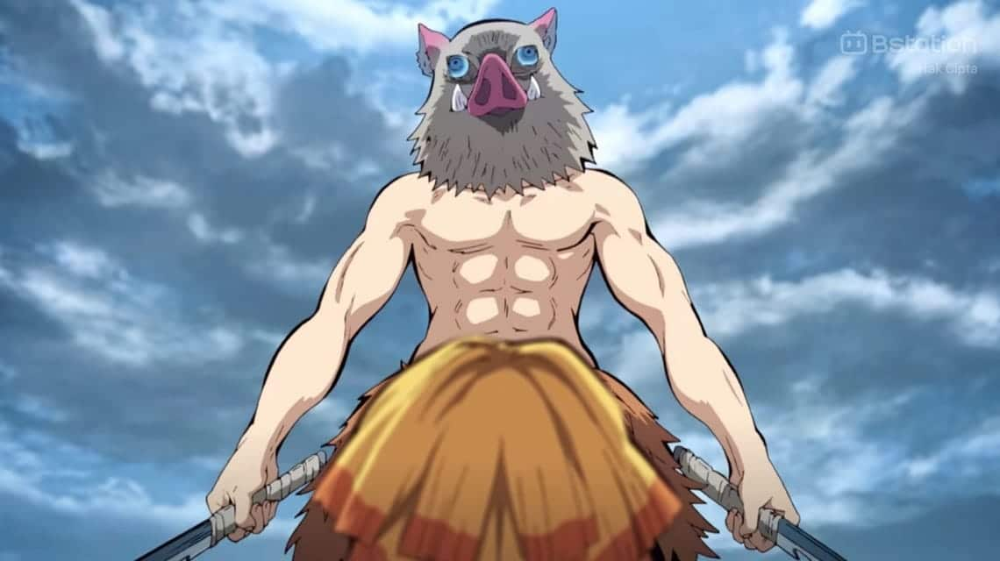

- “It's Okay To Do Things A Little Differently”
- “There is no other way to go but forward.”
- “Feel The Rage.”
- “Don't Cry, Even If You Have Regrets!”
- "Who Cares If You Don't Acknowledge Me?"
- "If You Can Do One Thing, Hone It To Perfection."
- “Don’t Ever Give Up.”
— Rengoku Kyojuro
— Sabito

— Tomioka Giyu
— Hashibira Inosuke
— Tengen Uzui

— Kuwajima Jigoro
— Agatsuma Zenitsu